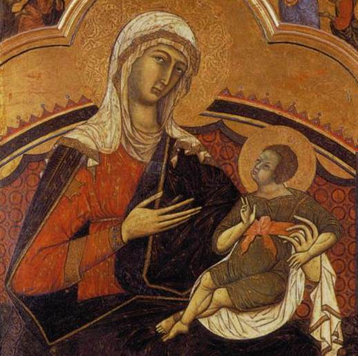
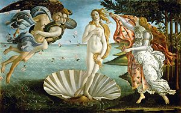

The University of Chicago Latke-Hamentash Symposium, November 1977
Introduction [each panelist writes his own, delivered by campus rabbi Daniel Leifer]:
Kenneth Kaye, Assistant Professor of Educational Psychology, attended his first Latke-Hamentash Symposium at the age of three. It made such a strong impression on him that he has not touched either a latke or a hamentash for 28 years. However, his academic interest in the subject has remained strong. Dietary issues played an important part in his formative years: his parents believed that bacon or pork might give you trichinosis unless it was burnt to a crisp.
His career in child psychology and family interaction processes probably owes its origins to the fact that interpersonal relations in his own family were somewhat problematic. His grandparents were very critical of Jews who became assimilated. For example, they could never forgive his Uncle Melvin for marrying a girl who said b'mitzvotov. They knew she made a special point of saying it, just to drive them crazy. Eventually she had trouble remembering whether it was b'mitzvosov or b'mitzvotov she wasn't supposed to say, so she would say both: “Asher kidishanu b'mitzvosov—er, tov, sorry!” This was the last straw, and finally Melvin himself beat her brains out with a challah. From that time on, no one in the family could eat challah without being reminded of Miriam, so hamentashen and latkes became staples of the Sabbath meal. Kenneth, unable to eat either food without being reminded of the pathetic symposium his parents had dragged him to at age three, developed a phobia of Sabbath candles. It was recommended to his parents that they put him in an institution, but they felt graduate school would be cheaper.
Kaye's professional career is reaching its apex with his appearance here tonight. He played minor league ball with the Cambridge Pragmatists, was sold to Seattle where he played one season, then was traded to Chicago for a left-handed pitcher and two outfielders. This is his seventh season with the Maroons, who have until December 15th to decide, now that he's too old to pitch regularly, whether they want to send him back down to the minors or keep him on as a third base coach.
Kaye's only scholarly book (I am sorry to say) is entitled Left or Right: Which is Better? – a treatise on breastfeeding – but he is at work on another book now, tentatively called Latke and Hamentash: Which is Which? You may also have seen his article in last month's Cosmopolitan entitled “Orgasms: Will they hurt your baby?”
Many students and colleagues are unaware that Kaye is also a best-selling popular author. His first novel was called I Married a Shikse—and Lived!! And he recently published its sequel: Divorce—Shikse Style.
We are greatly honored that Prof. Kaye consented to be a member of our panel this year, especially from the point of view of his expertise on the subject of mutual influences between mother and child and their role in socialization. The title of his paper is:
“Latke-Hamentash Interaction”
Distinguished colleagues, learned rabbi, dear friends, mother, father, grandparents, cousins, aunts and uncles: Today … oh, excuse me … It is a great honor to be invited to share my prodigious knowledge with you, at what I hope to convince you should be the last Latke-Hamentash Symposium. The many eminent men—and one or two lucky women—who have participated in this symposium all have been pundits of the first order. It is difficult to find anything new and/or clever to say on the subject any more, as my colleagues have demonstrated. Not a stale bun on the word hamentash, nor a tasteless reference to heartburn, nor a trite spurious etymology nor an anti-Semitic stereotype has escaped being incorporated into at least half a dozen of my predecessors' contributions over the past 32 years. In the face of this challenge, I felt the only way I might possibly make an original and worthwhile contribution would be to approach the topic seriously and to report some original research.
While it is obviously ridiculous to analyze an ethnic cuisine from the point of view of mathematics, linguistics, music, etc., it is quite valid to do so from the point of view of child psychology and particularly my own field, mother-infant interaction. For the basis of culture is socialization, which takes place primarily in the process of interaction between children and their mothers. We now know that this process begins at birth—probably much earlier—and that the entire basis of the child's personality and intellectual achievement is largely determined by the time he or she is two weeks old. Later issues such as the four Ws (weaning, walking, and wee-wee), which received so much attention in the past, are now recognized to be red pickled herrings.
Background of the Problem
Although we
are only recently coming to realize how early in a child's life basic
personality and school achievement are shaped, at a more general level the
importance of the Jewish mother has long been recognized, as has the importance
of Jewish cooking. As Levi-Strauss wrote in his classic cross-cultural
best-seller, The Goy of Cooking, “Une dimension essentielle pour tout
structuralisme genetique est
The importance of particular foods in a child's psychic development has been well stressed in Jewish folklore. We have such sayings as “a knish in time saves wine,” “spare the lox and spoil the child,” “a kishke a day makes the doctor stay (he should only notice your daughter),” and “eat, eat, it'll go in the garbage.”
For those with more scholarly appetites, the field is dominated of course by Freud, with his major work Constipation and its Discontents. Freud had researched the subject of Jewish culture thoroughly because of his lifelong attempt, nearly successful, to pass himself off as a Jew. (As you know, it was not discovered until Freud's death that he was not circumcised.) He pretended to be Jewish because he wisely foresaw that psychoanalysts would never accept a non-Jew as their leader. The main question behind all of Freud's work was how Jewish versus Gentile mothers affect their children's psychological growth differently as a function of a diet consisting of latkes and hamentashen versus one consisting of Velveeta cheese and Wonder bread. His best-known book on this subject is unfortunately known by its wrongly translated title The Ego and the Id; the true title is The Goy and the Yid.
Today we are not concerned with the cross-cultural comparison so much as the question how within Jewish culture, different foods lead to different personalities: from the point of view of our special topic this evening, what are the early determinants of a latkedich versus a hamentashenlikh syndrome?
The other
great scholar in my field is a Jew, who (I regret to say) has done
everything to conceal his Jewish roots: Jean Piaget. Like many of you, I always
thought that Piaget was the Swiss word for ‘wristwatch', but I recently learned
that it comes from two Lithuanian words pia,
or pisher, meaning ‘boy', and get: Jew. “Jewboy”. So, Piaget is of
Jewish descent, though highly assimilated. He tells us in his autobiography: “Une dimension essentielle pour tout
structuralisme genetique est
This has led directly to the hypothesis guiding most current work in this field, namely that if a child is fed too many latkes without a sufficient number of hamentashen as chasers, he or she will become (intellectually speaking) constricted, get poor grades and have trouble getting into medical school. At the opposite extreme, the overfeeding of hamentashen with insufficient latkes leads to the child's becoming carried away with higher intellectual activity, bumping into walls and never quite being able to get out of medical school, let alone marry a nice Jewish girl. Theory holds that either extreme is directly due to the mother: that there are, in fact, “latke-type” and “hamentash-type” mothers, with different effects upon their children's development, both bad.
My students and I set out to test this hypothesis, and to develop a diagnostic tool with predictive validity from the very earliest interactions of the mother-infant dyadic open social system.
Method
We observed 12 mothers breastfeeding their infants on several occasions each, and on the basis of a close and incredibly detailed examination of the … data(!), we categorized the mothers into four groups. Now, there is absolutely no truth to the insinuation that our choice of breastfeeding as a situation for observation was motivated by any but the purest scientific reasons. One member of my tenure review committee even went so far as to accuse me of an obsession with mammary voyeurism (these things get out, you know) but no serious scholar pays attention to boobs like that. Nor is it true that my mother wears combat boots.
It so happens that we can tell, by elaborate computerized microanalysis of our sophisticated and detailed codings of the feeding session, what type of mother each of our subjects was going to be. The latkedikh mother is one whose only concern is nourishing the infant, keeping him in close contact with her body and largely hidden from view; she wishes to retain him in her womb. Not surprising, for the Talmud tells us that latkes were first created as direct imitations of the placenta: round but otherwise formless, full of veins, and rather slimy. The hamentash, of course, symbolizes birth: the dilation of the cervix, to be precise. First the seeds are deposited in the moist dough, which is then closed up and baked, and finally when they are ready to “bear fruit,” as it were, they expand and expose their contents to the world. Seriously, this bulging triangle is a crowning achievement of culinary labor, and delivery. The beautiful Queen Esther herself, in the act of giving birth to King Ahasuerus's first-born son, Darfgein Pishen (this is written in the Megillah Part Two), allowed the royal pastry chef to model her private parts in creating the first hamentash. You may laugh, but you must admit this food is, indeed, among the delicacies of all countries, the epitome of mohns veneris.
Accordingly, the hamentashenlikh mother is one whose principal concern is less with the nutritive aspect of breastfeeding than with the presentation of her child to the world. While the placenta- or latke-oriented mother is reluctant to be separated from her infant, virtually smothering him with breast milk, applesauce, sour cream, etc., the genital or hamentash-oriented mother is perhaps a little too eager to be free of her infant. We find, for example, they push for early achievement of the four Ws.
Our 12
subjects were all Jewish women living in
This is one of our latke-type mothers, as you can see.
The next slide shows a mother of the hamentash type. Note the infant's reaction.

Here's another of the hamentash type, who happened also to be a committed opponent of gender stereotyping..

Results
The dependent variables came from follow-up visits which we made to each of the 12 families six years later, at dinner time. As you can see, we divided our subjects into four groups: the latke type, the hamentash type, and two control groups.
Correlation coefficients, maternal and child variables
|
|
“Latke” type of mother |
“Hamentash” type |
“Matzo ball” type |
“Yenta” type of moter |
|
Child eats everything on plate |
.03 |
.03 |
-.01 |
.00 |
|
Child eats everything on table |
.02 |
.02 |
.00 |
.01 |
|
Child eats everything in sight |
.03 |
.03 |
.01 |
-.01 |
|
Child vomits between meals |
.04 |
.04 |
.00 |
.01 |
|
Child vomits during meals |
.02 |
.02 |
-.01 |
.00 |
The third, matzo ball group was similar to the first two in recognizing the importance of food; in fact, all three of these types fall into the superordinate category, Gastric Jewesses.
Now, these correlation coefficients, I hasten to point out, are not what we would call statistically significant. On a scale from zero to 1.0, they are more toward the low end. But if I might be permitted to speculate beyond the data, I suggest that the relation between maternal and child measures is consistently positive and greater for the latke and hamentash types than for the control groups. Most important, theoretically, is the fact that these small but suggestive correlations are absolutely identical for the two types. Latkedikh versus hamentashenlikh mothering seems to make no difference at all.
Discussion
Given the superficial level at which this issue has been addressed in the past, you might expect us to shrug our shoulders and consider the case closed. That is not the way we operate, however, in the Department of Education. Fourteen dissertations, six M.A. theses, and 11 trial research papers based on these findings have led to the firm conclusion that more research is needed, and we have recently submitted to the National Science Foundation a multi-disciplinary, multi-year, multi-media, multi-dollar grant proposal to carry this work forward to its logical end.
Which is, (a) by age two weeks when our observations were made it is already too late to diagnose the future of the mother-infant dyadic open social dyadic interactional system; and (b) neither the latke nor the hamentash is an adequate paradigm for the true complexity of early dyadic open systemic social interaction in the context of the mother-infant dyad.
This should come as no surprise to Jewish scholars. It was our heritage that originated the idea that it is less important what you eat than what you eat it with and what plates you eat it on. Context is everything. Only a true systems approach can possibly hope to arrive at the truth. We reject the simple input-output models of alimentary processes in favor of a complete microanalysis of context-dependent transformation rules. As the Torah says, “Thou shalt not eat pork or shrimp except in Chinese restaurants.”
Viewing the dyad as an open system from Birth, we find that a young mother is subject to a myriad of interconnected, interrelated but conflicting influences—from her mother, her in-laws, the doctors and nurses. We have videotaped a number of births, and stop-action photography reveals that the mother is indeed the center of attention, but it is the kind of attention which can easily lead her at the moment of Birth to withdraw into a shell—as our final slide shows.

Thank you.